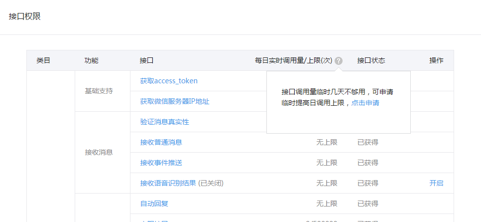
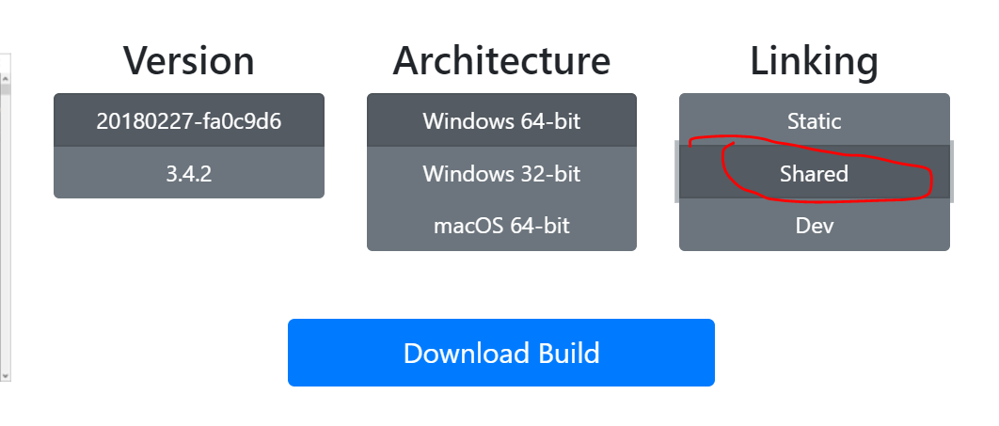
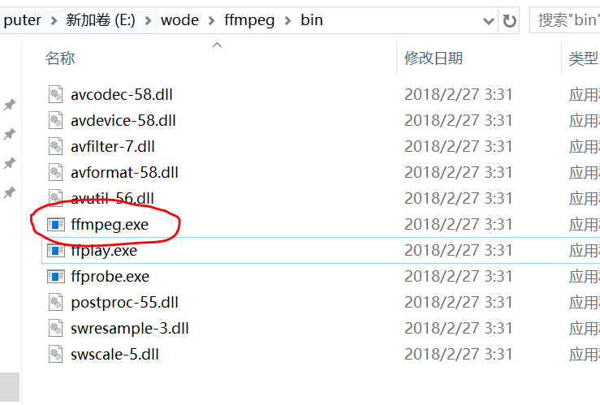
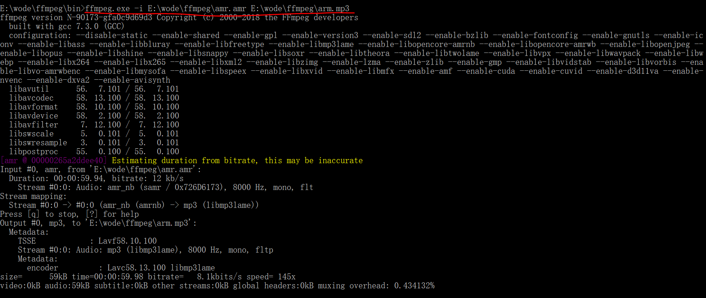

微信开发之录音上传、下载、转码
一年的时间里，前前后后都在搞微信开发的相关模块，这不前一阵子，公司又开了个新项目，其中有一个就是类似于微信朋友圈的功能（我也不知道为啥要开发微信已有的功能啊，泪奔…），其中包含上传图片、录音、视频等，由于微信端上传图片和视频这块也是头一遭做，图片采用了微信的相关插件，视频嘛用的是百度的webupload插件，感觉也相当不错，采用了分片上传技术。今天这篇就主要介绍一下，录音的相关功能。
简单说明
微信录音这块，其实面对这项功能的时候，不用我多说，都知道要先去看开发文档，查阅相关资料等准备工作；我先贴个地址，免得看我这篇文档的时候再去查找网页：[微信公众号开发-微信JS-SDK说明文档][2]。进入到这个页面找到第5小节，音频接口这里，就是本篇要说的东西了。
微信录音分为如下几个接口（这里归纳一下，文档里有，详细内容自己去看吧）：
-
开始录音接口
-
停止录音接口
-
监听录音自动停止接口
-
播放语音接口
-
暂停播放接口
-
停止播放接口
-
监听语音播放完毕接口
-
上传语音接口
-
下载语音接口
看到以上，是不是觉得蛮多的，配合起来使用才提供了这么一个完整（好像也并不怎么完整，没有提供方便的转码及下载本地机制）的录音功能。好话说在前头：你弄完了当你再去看这块代码的时候，发现还真他娘的乱啊。。。所以，我写这篇记录的原因就在这里了，狗头.png
还有一个就是接口权限（一张图片来表述，图片来源微信文档…）：

上传代码梳理
本章会以文字和代码的形式进行梳理，过程应该会蛮多的，不过看完之后直接拿去使用，问题也应该不大，如是说道。
JS-SDK库的使用步骤，这里就不过多介绍了，文档里也有，也是简单整理下几个所需步骤吧：
-
绑定域名
-
引入JS文件
-
config接口注入权限验证配置
-
ready接口处理成功验证
-
error接口处理失败验证
config事件
我们直接从注入API列表说起，config接口有如下几个属性（不知道属性是否合适，姑且叫为属性吧），
/**
* 微信jssdk调用接口初始化
*/
wx.config({
debug: true, // 开启调试模式,调用的所有api的返回值会在客户端alert出来，若要查看传入的参数，可以在pc端打开，参数信息会通过log打出，仅在pc端时才会打印。
appId: '', // 必填，公众号的唯一标识
timestamp: , // 必填，生成签名的时间戳
nonceStr: '', // 必填，生成签名的随机串
signature: '',// 必填，签名
jsApiList: [
'startRecord', // 录音开始api
'stopRecord', // 录音结束api
'uploadVoice', // 上传录音api
'onVoiceRecordEnd', // 超过一分钟自动停止api
'playVoice', // 播放录音api
'pauseVoice', // 暂停录音api
'onVoicePlayEnd', // 监听语音播放完毕api
]
});
代码中的jsApiList就是录音功能所用到的所有接口了。其他几个属性的值，就不介绍如何生成的了，调用jssdk的类库，通过公众号的appid和secret就能获取到。嗯…还是贴下这部分的代码吧：
// 引入jssdk库
require_once APPPATH . 'libraries/weixin/jssdk.php';
// 传入appid和secret实例化jssdk类
$JsSdk = new JSSDK('wxa318c6979e231ffa', '301d8f04a0f2ba3098135a162165c991');
// 得到相关时间戳和随机字符串
$data['signPackage'] = $JsSdk->getSignPackage();
// 获取当前页面url
$data['signPackage']['url'] = explode('?', $data['signPackage']['url'])[0];
注意：调用JSSDK类的时候，会在项目根目录下生成两个文件access_token.php和jsapi_ticket.php，里面放的是过期时间和token、ticket值。
ready事件
ready注册录音播放结束监听事件：
wx.ready(function(){
// 监听事件一开始就加载
wx.onVoicePlayEnd({
success: function (res) {
layer.msg('播放完毕'); // 这里用了layer弹框
}
});
});
录音事件
本小节主要是关于录音事件的介绍，代码行中的注释应该写的很清楚，不清楚的留言问吧：
// 声明一个录音数组 以存放录音临时ID
var voice = {
localId: []
};
// 手指按下录音键
$('#micb').on('touchstart', function(event){
// 取消事件的默认动作
event.preventDefault();
// 赋值当前的录音开始时间戳到全局变量
START = new Date().getTime();
recordTimer = setTimeout(function(){
// 录音开始
wx.startRecord({
success: function(){
// 录音不能超过一分钟 超过一分钟自动停止 并触发该事件
wx.onVoiceRecordEnd({
// 录音时间超过一分钟没有停止的时候会执行 complete 回调
complete: function (res) {
// 给出提示
layer.msg('最多只能录制一分钟', {icon:2, time:1000});
// 记录录音的临时ID
voice.localId = res.localId;
uploadVoice();
}
});
},
cancel: function () {
alert('用户拒绝授权录音');
}
});
},300);
});
// 松手结束录音
$('#micb').on('touchend', function(event){
event.preventDefault();
// 获取录音停止时间戳
END = new Date().getTime();
// 获取录音总时长
duration = END - START;
// 如果小于300ms则视为时间太短 抛出提示
if(duration < 300){
END = 0;
START = 0;
layer.msg('时间太短', {icon:2, time:1000});
//小于300ms，不录音
clearTimeout(recordTimer);
}else{
wx.stopRecord({
success: function (res) {
voice.localId = res.localId;
// 上传录音
uploadVoice();
},
fail: function (res) {
alert(JSON.stringify(res));
}
});
}
});
// 上传录音
function uploadVoice() {
// 调用微信的上传录音接口把本地录音先上传到微信的服务器
// 不过，微信只保留3天，而我们需要长期保存，我们需要把资源从微信服务器下载到自己的服务器
wx.uploadVoice({
localId: voice.localId, // 需要上传的音频的本地ID，由stopRecord接口获得
isShowProgressTips: 1, // 默认为1，显示进度提示
success: function (res) {
// 把录音在微信服务器上的id（res.serverId）发送到自己的服务器供下载。
$.ajax({
url: 'down_file.php',
type: 'post',
data: {serverId: res.serverId},
dataType: "json",
success: function (data) {
if(data.status == 200) {
layer.msg('语音保存成功', {icon:1, time:2000});
}
},
error: function (xhr, errorType, error) {
console.log(error);
}
});
}
});
}
/**
* 播放音频
*/
function playVoice()
{
wx.playVoice({
localId: voice.localId // 需要播放的音频的本地ID，由stopRecord接口获得
})
}
以上就是微信录音在前端的JS代码，接下来说明服务器（PHP）端下载录音到本地的代码，下载代码具体在download_media()方法中，其他都是一些辅助方法：
下载
<?php
class Wechat
{
/**
* 获取微信access_token
* @return string access_token
*/
public function getWechatAccessToken()
{
$token_url = 'https://api.weixin.qq.com/cgi-bin/token?grant_type=client_credential';
$appid = 'appid';
$secret = 'secret';
$get_token_url = $token_url . '&appid=' . $appid . '&secret=' . $secret;
$res = file_get_contents ( $get_token_url );
$res_arr = json_decode ( $res, true );
if($res_arr['access_token']) return $res_arr['access_token'];
return false;
}
/**
* 生成毫秒级时间戳
*/
public function msectime()
{
list($msec, $sec) = explode(' ', microtime());
return (float)sprintf('%.0f', (floatval($msec) + floatval($sec)) * 1000);
}
/**
* 随机取出字符串
* @param int $strlen 字符串位数
* @return string
*/
public function salt($strlen)
{
$str = "abcdefghkmnprstuvwxyzABCDEFGHKMNPRSTUVWXYZ23456789";
$salt = '';
$_len = strlen($str)-1;
for ($i = 0; $i < $strlen; $i++) {
$salt .= $str[mt_rand(0,$_len)];
}
return $salt;
}
/**
* 下载微信素材资源到本地
* @param url $url 素材地址
* @return json
*/
public function download_media()
{
// 获取微信服务器的录音ID
$media_id = $this->input->post('serverId');
if ($media_id) {
// 获取access_token
$access_tokens = $this->getWechatAccessToken();
// 下载素材接口
$down_media_url = 'https://api.weixin.qq.com/cgi-bin/media/get';
/**
* 根据access_tokens获取素材
*/
$get_media_url = $down_media_url . '?access_token=' . $access_tokens . '&media_id=' . $media_id;
// 获取文件流
$file_flow = file_get_contents($get_media_url);
// 本地保存目录
$save_path = "resource/uploads/";
if( !is_dir($save_path) ) {
mkdir(iconv('UTF-8', 'GBK', $save_path), 0777, TRUE);
}
// 生成文件名
$filename = $this->msectime() . $this->salt(6) . '.amr';
// 写入文件流到本地
$flag = file_put_contents($save_path . '/' . $filename, $file_flow);
unset($file_flow);
if($flag !== FALSE) {
return $save_path . '/' . $filename;
}else {
return FALSE;
}
}
}
}
由于微信保存录音的格式.amr，所以下载的时候只能下载amr格式的音频，强行下载成MP3格式的话，播放可能会出现一些问题，接下来就说下转码的几种方式；
转码
第三方工具 FFmpeg
FFmpeg介绍
FFmpeg是一套可以用来记录、转换数字音频、视频，并能将其转化为流的开源计算机程序。FFmpeg在Linux平台下开发，但它同样也可以在其它操作系统环境中编译运行，包括Windows、Mac OS X等。———来自百度的介绍。
下载
通过这个网址下载ffmpeg.exe程序 https://ffmpeg.zeranoe.com/builds/，选择shared这个类型，如下图：

下载完成后，解压在bin目录可以看到ffmpeg.exe

转码
cmd命令行转码：
直接切换到ffmpeg.exe的目录，在命令行输入
ffmpeg.exe -i E:\wode\ffmpeg\amr.amr E:\wode\ffmpeg\arm.mp3
即可，就可以看到整个转码的过程。下图所示：

php转码：
那么如何利用php来调用exe软件来进行转码呢？很方便的是php提供了相应的函数，exec和system，他们都可以调用cmd的命令，比如调用ffmpeg.exe来进行转码：
exec("E:\\wode\\ffmpeg\\bin\\ffmpeg.exe -i E:\\wode\\ffmpeg\\amr.amr E:\\wode\\ffmpeg\\exec.mp3");
就是这么简单了。当然ffmpeg也支持其他格式的转码，音频、视频等都可以。
PS：会把测试的amr文件贴在下面的资源节里，有需要的小伙伴可以下载测试，因为现在的amr格式的文件都挺难找的，别问我怎么知道的….
第三方平台 七牛云
除了通过php外部命令调用软件进行转码之外，还可以通过第三方平台实现转码操作，这里就举例七牛云，首先贴两个链接：
-
[七牛开发者SDK列表][7]
-
[七牛文件上传说明][8]
上面的的一个链接里显示的是七牛官方所有的SDK文档列表，可以根据后端语言的不同进行选择查看；第二个链接就是本小节要说的利用七牛云上传文件。下面来瞧一下代码，也同样封装成类的形式：
<?php
use Qiniu\Auth;
use Qiniu\Storage\UploadManager;
use Qiniu\Storage\BucketManager;
class uploadQiniu
{
public $qiniu = [
'AccessKey' => '', // 配置七牛AccessKey
'SecretKey' => '', // 配置七牛SecretKey
'bucket' => 'cxiansheng', // 七牛的存储空间名，我的是cxiansheng
'voice-pipeline' => 'cxiansheng', // 设置转码队列名
'voice-domain' => 'http://***.com/' // 你的CDN加速域名 上传文件成功后通过这个域名+文件名就可以访问到相应的资源
];
/**
* 上传微信录音文件到七牛并转码mp3
* @param string $trans_ext 本地文件路径
*/
public function upload_qiniu($file_path)
{
// 获取七牛auth对象
$auth = new Auth($this->qiniu['AccessKey'], $this->qiniu['SecretKey']);
// 定义转码后的mp3文件名
$qiniu_filename = 'qiniu' . $this->msectime() . $this->salt(6) . '.mp3';
// 指定上传文件成功后的后续处理 这里为转码操作
$savekey = \Qiniu\base64_urlSafeEncode($this->qiniu['bucket'] . ":" . $qiniu_filename);
$fops = 'avthumb/mp3/ab/128k/ar/44100/acodec/libmp3lame|saveas/' . $savekey;
/**
* 设置转码格式和转码队列名
*/
$policy = [
'persistentOps' => $fops,
'persistentPipeline' => $this->qiniu['voice-pipeline']
];
/**
* 设置上传到七牛的原始amr临时文件名
* @var string
*/
$qiniu_tmp_filename = 'originamrtmp.amr';
// 获取上传token
$uptoken = $auth->uploadToken($this->qiniu['bucket'], null, 3600, $policy);
// 调用上传类
$uploadMgr = new UploadManager();
// 调用 UploadManager 的 putFile 方法进行文件的上传。
list($ret, $err) = $uploadMgr->putFile($uptoken, $qiniu_tmp_filename, $file_path);
// 资源管理类
$bucketMgr = new BucketManager($auth);
if($ret['key']) {
// 删除原始amr临时文件
$err = $bucketMgr->delete($this->qiniu['bucket'], $ret['key']);
unlink($file_path); //删除服务器上的amr文件
// 返回在七牛上的资源路径
return $this->qiniu['voice-domain'] . $qiniu_filename;
}else {
return FALSE;
}
}
}
上面的代码应该不用我做过多介绍，里面的注释每一步应该都写得很清楚。
PS：在通过第三方转码的时候，调用api成功之后，由于要待转码的文件一般都会处于转码队列中，可能还没有立即转码成功我们想要的文件。所以不能根据转码过后的文件名去下载，需要等待一会儿，或者可以先把转码后的文件名保存在数据库中，用定时任务去下载到本地。具体请看我在SF提问里的回答–[下载七牛云mp3文件间歇性失败][9]
总结
至此，在微信开发中关于录音这一块儿的功能，就已经介绍完毕。如果有写错的地方，欢迎拍砖。同样看完还不是很理解的朋友，也可以留言。
以上。
资源
-
[composer安装PHP-FFmpeg][10]
-
[ffmpeg-php扩展][11]
-
[微信jssdk录音功能开发记录][12]
-
[amr格式文件][13]
其他另外两篇自己关于微信开发的总结推荐：
-
[微信开发之微信公众号支付][14]
-
[微信开发之微信登录][15]